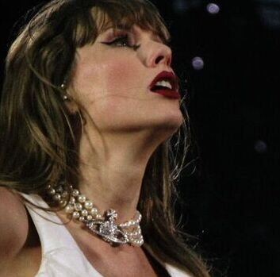
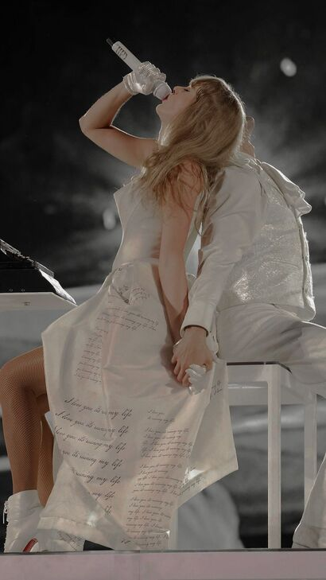

Aqui podras aprender todo lo que necesitas sobre la industria musical
En 2022, Taylor Swift nos sorprende una vez más con un nuevo álbum titulado "Midnights" (2022). Este álbum nos transporta a 13 noches de insomnio que
abarcan tanto su pasado como su presente, llevándonos en un viaje a través de sus sueños y pesadillas.
En "Midnights", Taylor explora la intimidad de los pensamientos y sentimientos que surgen en la quietud de la noche, cuando la mente está libre para vagar
por los rincones más profundos del corazón y la mente.
El álbum captura la dualidad de las emociones nocturnas, tanto las buenas como las malas, y nos muestra a una Taylor que se enfrenta a sus propios
demonios mientras busca la paz. Cada canción es una ventana a sus experiencias más íntimas, revelando un mosaico de amor, desamor, arrepentimiento y esperanza.
"Midnights" también marca un momento significativo en la vida personal de Taylor, ya que aborda su ruptura amorosa con su relación más larga.
A través de las letras y melodías, Taylor nos comunica el dolor y la liberación que acompaña a este último adiós, reflejando la presunta infidelidad
que puso fin a la relación. El álbum es una catarsis emocional para Taylor, un espacio donde puede procesar y dejar ir el pasado mientras mira hacia
un futuro más brillante.
Con este trabajo, Taylor Swift demuestra una vez más su maestría para convertir experiencias personales en arte universal,
invitándonos a todos a reflexionar sobre nuestras propias noches de insomnio y los sentimientos que emergen en la oscuridad.
"Midnights" es una obra introspectiva y honesta, que resuena con cualquiera que haya enfrentado los desafíos del amor y la pérdida.
Durante su discurso de aceptación del premio Grammy a Mejor Álbum de Pop Vocal por "Midnights" en 2023,
Taylor Swift sorprendió a todos al anunciar su undécimo álbum, "The Tortured Poets Department",
lanzado en 2024. Este álbum refleja una etapa significativa y profunda en la vida de Taylor, mostrándola en un proceso de destrucción y
reconstrucción personal.
La versión estándar del álbum incluye dieciséis canciones, explorando una amplia gama de emociones y experiencias.
Cada pista revela un aspecto diferente del viaje emocional de Taylor, desde la traición y el dolor hasta la superación y el renacimiento.
Para los verdaderos aficionados, "The Tortured Poets Department" también se lanzó en una versión extendida titulada "The Anthology"
—en castellano: «La Antología»— que presenta un total de treinta y una canciones, convirtiéndolo en un doble álbum.
Esta edición incluye quince canciones adicionales que profundizan aún más en las temáticas del álbum y ofrecen una experiencia auditiva más completa
y enriquecedora.
Además, se lanzaron cuatro ediciones especiales en formato físico, cada una con una pista exclusiva titulada «The Manuscript», «The Bolter»,
«The Albatross» o «The Black Dog». Estas pistas adicionales, que corresponden a las canciones de la versión extendida, ofrecen a los fans una
visión aún más íntima y personal del proceso creativo de Taylor.
"The Tortured Poets Department" fue en su mayoría bien recibido por parte de especialistas musicales, quienes elogiaron la honestidad y
vulnerabilidad de Taylor en este proyecto. A través de este álbum, Taylor nos muestra su capacidad para canalizar su dolor y experiencias
personales en una obra de arte poderosa y conmovedora.
Esta era nos muestra a una Taylor que se destruye y se construye a sí misma después de una infidelidad y de una relación que la apagó.
Las canciones del álbum nos hablan de sus procesos internos, su etapa de duelo y, finalmente, de cómo pudo soltar todo el dolor y seguir adelante.
Es un testimonio de resiliencia y crecimiento personal, y un recordatorio de que incluso en los momentos más oscuros, siempre hay una luz al final del túnel.

